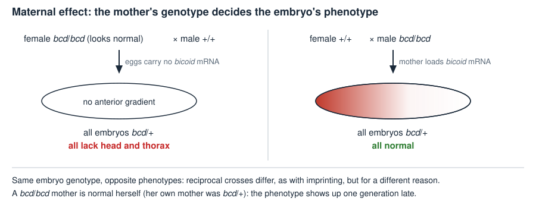
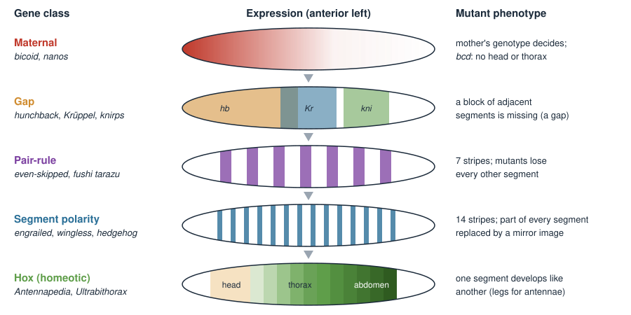

Development & model organisms
Part 6: Gene regulation & development. Genetic analysis of how an embryo is built
About this lecture
How does one fertilised egg build a body with a head at one end and a tail at the other? Most of what we know came from mutant screens in a few model organisms, and from the surprise that the genes found in flies and worms have counterparts in humans.
- Forward vs reverse genetics; the main model organisms and their databases.
- The Nüsslein-Volhard–Wieschaus screen and maternal-effect genes.
- The Drosophila segmentation hierarchy: maternal → gap → pair-rule → segment polarity → Hox.
- Hox genes and colinearity; PAX6/eyeless and deep conservation.
- The C. elegans cell lineage.
- Genetic tools: transgenics, GAL4/UAS, CRISPR–Cas9 knockouts.
Book: Hartwell, Genetics: From Genes to Genomes, the chapter on the genetic analysis of development.
Why model organisms?
| Organism | Generation | Genome (approx.) | Strengths | Database |
|---|---|---|---|---|
| Budding yeast, S. cerevisiae | ~2 h | 12 Mb, ~6000 genes | haploid and diploid; tetrads; cell cycle | SGD |
| Worm, C. elegans | ~3.5 days | 100 Mb, ~20 000 genes | invariant cell lineage; transparent; RNAi by feeding | WormBase |
| Fruit fly, D. melanogaster | ~10 days | 140 Mb, ~14 000 genes | huge mutant collections; balancers; GAL4/UAS | FlyBase |
| Zebrafish, D. rerio | ~3 months | 1.4 Gb, ~26 000 genes | transparent embryos; vertebrate | ZFIN |
| Mouse, M. musculus | ~10 weeks | 2.7 Gb, ~22 000 genes | mammal; knockouts; disease models | MGI |
| Thale cress, A. thaliana | ~6 weeks | 135 Mb, ~27 000 genes | plant development; selfing | TAIR |
The Alliance of Genome Resources brings SGD, WormBase, FlyBase, ZFIN, MGI, RGD and Xenbase together, with orthology between them.
Forward and reverse genetics

- Forward: mutagenise, screen, find the genes. Unbiased, but you only find genes whose loss gives a visible, specific phenotype.
- Reverse: start from a gene (often an ortholog of a gene known elsewhere), knock it out, and look. Targeted, but genes can be redundant and show no phenotype.
The Heidelberg screen
Christiane Nüsslein-Volhard and Eric Wieschaus (1980) looked for every gene needed to make the pattern of the Drosophila larva.
- Mutagenise males with EMS; set up thousands of lines, each carrying one mutagenised chromosome over a balancer (a chromosome with inversions that cannot recombine, and a dominant marker).
- Inter-cross heterozygous siblings: ¼ of the embryos are homozygous for the new mutation. Look for embryos that die with an abnormal larval cuticle pattern.
- Sort the mutations into complementation groups (genes). Many genes had several alleles: the screen was close to saturation.
- They found about 15 genes for segment number and polarity, in three classes: gap, pair-rule and segment polarity. (Nobel Prize 1995, with Ed Lewis.)
Maternal-effect genes

The anterior–posterior axis is set up before the embryo’s own genes are switched on, by mRNAs the mother puts into the egg. bicoid mRNA sits at the anterior pole; its protein forms a gradient that tells nuclei how far they are from the head. A screen for maternal-effect genes therefore needs homozygous mothers, one generation later than a zygotic screen.
The segmentation hierarchy

Each tier is a set of transcription factors (or signals) that regulate the next. The pattern gets finer at every step: one gradient → a few broad domains → 7 stripes → 14 stripes → 14 segments, each with its own identity.
Reading a stripe: enhancers again
How does a gene get expressed in exactly seven stripes? Each stripe is driven by its own enhancer.
- The even-skipped stripe 2 enhancer (about 500 bp) contains binding sites for activators (Bicoid, Hunchback) and repressors (Giant, Krüppel).
- Stripe 2 forms where Bicoid and Hunchback are high and Giant and Krüppel are low: a narrow band of a few nuclei.
- Delete the stripe 2 enhancer: stripe 2 disappears, the other six stay. Attach it to a reporter gene: the reporter is expressed in stripe 2 only.
This is the cis-regulatory logic of the Eukaryotic regulation unit, at work in an embryo: modular enhancers make one gene readable in many places.
Hox genes: identity of each segment
Homeotic mutations turn one body part into another:
- Antennapedia (dominant gain-of-function): the Antp gene is switched on in the head, and legs grow where the antennae should be.
- Ultrabithorax (loss of function, combined alleles in the bithorax complex): the third thoracic segment develops like the second: a fly with four wings.
Ed Lewis showed that the genes of the bithorax complex lie in the same order on the chromosome as the segments they control. All Hox genes share a 180-bp homeobox, encoding a DNA-binding homeodomain: they are transcription factors.
Colinearity, from flies to mice

The order of Hox genes on the chromosome matches the order of the body regions where they act (colinearity). Mammals have four Hox clusters (Hoxa–d, 39 genes) made by duplication of one ancestral cluster. Knocking out mouse Hox genes gives homeotic changes in vertebrae, e.g. a cervical vertebra that looks like a thoracic one (with ribs).
eyeless and PAX6: one master gene for eyes?
- eyeless (Drosophila): flies lacking it have small or no eyes. Small eye (mouse, Pax6) and aniridia (human, PAX6) are caused by mutations in orthologous genes: in mice and humans one mutant copy is enough to give a phenotype (haploinsufficiency).
- Expressing eyeless in other imaginal discs gives ectopic eyes on legs, wings and antennae (Gehring lab, 1995). Mouse Pax6 does the same in flies.
- Flies, mice and humans built their eyes very differently, yet use a related transcription factor at the top of the eye programme: deep homology.
Flies actually have two PAX6 genes, eyeless and twin of eyeless; which one counts as “the” ortholog depends on the method. You will see this in Find it and in R.
C. elegans: a body built cell by cell
- The adult hermaphrodite has 959 somatic nuclei. John Sulston traced every division from the zygote: the cell lineage is invariant, the same in every worm.
- So a mutant phenotype can be read cell by cell: which cell divided wrongly, or took the wrong fate?
- 131 cells die by programmed cell death during development. Mutants in ced-3 and ced-4 keep them alive; ced-9 protects cells. The human counterparts (caspases, APAF1, BCL2) control apoptosis and cancer. (Nobel Prize 2002: Brenner, Horvitz, Sulston.)
- Heterochronic genes (lin-4, lin-14, let-7) decide when in the lineage each fate happens (last unit).
- Laser ablation of single cells shows which cells signal to their neighbours.
Genetic tools

- Transgenics: put new DNA into the germ line (P elements in flies, injection in worms and mice).
- GAL4/UAS: switch on any transgene (or an RNAi hairpin) in any tissue, by crossing a driver line to a responder line.
- CRISPR–Cas9: cut a chosen site; error-prone repair gives a knockout; repair with a template gives a precise edit. Mosaic founders are crossed to get a heritable allele.
Orthologs across model organisms
Orthologs are genes in different species that descend from one gene in their last common ancestor; paralogs arise by duplication within a lineage.
| Human | Mouse | Zebrafish | Fly | Worm | Yeast |
|---|---|---|---|---|---|
| PAX6 | Pax6 | pax6a, pax6b | toy (and ey) | vab-3 | — |
| CDK1 | Cdk1 | cdk1 | Cdk1 | cdk-1 | CDC28 |
- Developmental signalling and patterning genes go back to the animal ancestor; yeast, a single-celled fungus, has none of them.
- Core cell machinery (cell cycle, cytoskeleton) is shared with yeast.
- Zebrafish often have two copies, from a genome duplication in the ancestor of teleost fish.
Summary
| Concept | Key fact |
|---|---|
| Forward / reverse genetics | phenotype → gene (screens) / gene → phenotype (RNAi, CRISPR) |
| Heidelberg screen | EMS, balancers, embryonic lethals, complementation groups; gap, pair-rule, segment polarity |
| Maternal effect | embryo phenotype set by the mother’s genotype; bicoid mRNA gradient |
| Segmentation hierarchy | maternal → gap → pair-rule (7 stripes) → segment polarity (14) → Hox |
| Stripe enhancers | eve stripe 2: activated by Bcd, Hb; repressed by Gt, Kr |
| Hox genes | homeotic transformations; homeobox; colinearity; four clusters in mammals |
| PAX6 / eyeless | eye development from flies to humans; ectopic eyes; haploinsufficient in humans |
| C. elegans lineage | 959 somatic nuclei, invariant; 131 programmed deaths (ced genes) |
| Tools | transgenics, GAL4/UAS, CRISPR knockouts and edits, conditional knockouts |
| Orthologs | inferred by algorithms; patterning genes absent from yeast; fish duplicates |
Where this leads
- Part 7: Cancer genetics. Many developmental genes (SHH, WNT, NOTCH, HMGA2, BCL2) return as oncogenes and tumour suppressors when they are switched on in the wrong place or time.
- Part 7: Complex traits. Most human variation in shape and size comes from regulatory variants in developmental genes.
- Ethics. CRISPR in embryos and the germ line.